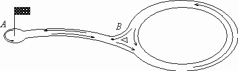

The figure shows the scheme of a go-karting route. The start and finish are at point A, and the driver can go along the route as many times as he wants by going to point A and then back onto the circle.

It takes Fred one minute to get from A to B or from B to A. It also takes one minute for Fred to go around the ring and he can travel along the ring in an anti-clockwise direction $($the arrows in the image indicate the possible direction of movement$)$. Fred does not turn back halfway along the route nor does not stop. He is allowed to be on the track for 10 minutes. Find the number of possible different routes $($i.e. sequences of possible routes$)$.
We denote by $M_n$ the number of all possible routes with a duration of n minutes. Each such route consists of exactly n sections $($a section is the segment AB, BA or the ring BB$)$. Let $M_{n, A}$ be the number of such routes ending at A, and $M_{n, B}$ the number of such routes ending at B.
To point B, you can get from both point A and point B in one minute, so $M_{n, B} = M_{n-1}$.
To point A, you can only get from point B in one minute, so $M_{n, A} = M_{n-1, B} = M_{n-2} = M_{n-2, A} + M_{n-2, B} = M_{n-2, A} + M_{n-3} = M_{n -2, A} + M_{n-1, A}$.
In addition, note that $M_{1, A} = 0, M_{2, A} = 1$. Thus, the numbers $M_{n, A}$ form the sequence: 0, 1, 1, 2, 3, 5, 8, 13, 21, 34, ... The number $M_{10, A}$ is 34 - the ninth Fibonacci number.
34 routes.